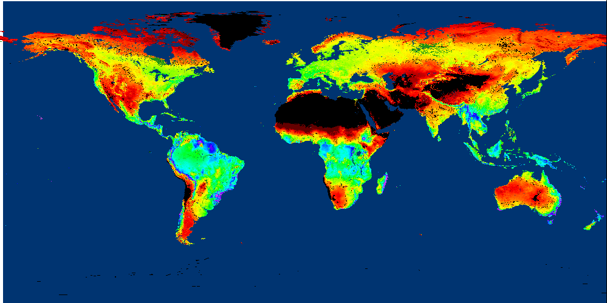

Today is an interesting date. It marks the 21st anniversary of the 9/11 terrorist attacks, so there are now adults who have known only the post-9/11 world. And yesterday, the United Kingdom elevated a new monarch, King Charles III. 1
We’re also in an interesting intellectual position. In the past few installments, the data have guided to a hypothesis that is anathema to conventional viewpoints. Or at least the data have led to an unexpected plot twist. This is the point in the story at which noted astronomer and famous science guru Carl Sagan’s exhortation that “extraordinary claims require extraordinary evidence” 2 comes to mind. So, I wanted to pause for an issue or two to set the stage, specifically, to spell out claims that appear extraordinary on their face and then examine what evidence might exist or be collected to support them.
As I expressed earlier, I fully expected this journey to reveal experimental support for two tenets of modern environmentalism. The first tenet is that environments in their durable natural state are more valuable to the planet than environments periodically disrupted by humans. The second tenet, perhaps a corollary to the first, is that forestry is more beneficial to the earth than industrialized agriculture. In other words, conservation is good, development is bad, trees are good, and corn is bad.
However, the data from Eddy Flux Covariance instrumentation, which directly measures the net carbon exchange with the atmosphere, tells a different story. Actively managed land absorbs more per season than grassland or forests, and C4 plants like corn and sugarcane are more efficient absorbers in a given season than C3 plants like soybean and most trees. This may seem counterintuitive because we experience forests as lush, rich ecosystems and modern farms as mechanical monstrosities and because we have experienced how plants like bamboo and kudzu (both of which are C3 plants) visibly dominate ecosystems. Nevertheless, the data, such as it is, speaks. And there’s a lot of it.
Further, as I learned early in my voyage through agricultural science, “All agriculture is local.” Sugarcane is a more effective absorber than corn because it is grown year-round in the tropics, not because it’s a “better” plant. It might sound obvious, but the “growing season” is critical.
Promoting cropland is heresy to the LULUCF branch of the IPCC cult. 3 But, as I pointed out earlier, ecological models of carbon retention suck, 4 and the IPCC itself has “high confidence” that global vegetation photosynthetic activity has increased over the last 2–3 decades ( Jia et al., 2019 ). So, at least I might have some help getting off this limb I find myself on.
Finally, because Eddy Flux Covariance considers only gas flow, any carbon removal from the ecosystem must be accounted for separately. This means that ‘harvest’ is good in that it allows humans to control where the carbon goes.
To proceed, we should revisit the problem/solution pair covered in Installment 20: 5
Let’s reiterate what the problem is and how possible solutions are constrained. Stated concisely:
The increase in carbon dioxide levels in the atmosphere, attributable to human extraction and combustion of geologic carbon over 350 years of industrialization, threatens to destabilize Earth’s climates.
Let’s now summarize our progress to a plausible solution.
To solve this problem, we must reduce the quantity of already-emitted carbon dioxide, not simply reduce the rate of its increase by “decarbonization”.
To remove carbon dioxide from the air using any direct engineering approach is prohibitively expensive, even if you only have to pay for energy.
Photosynthesis is the only process that creates economic value out of carbon dioxide because it uses (free) sunlight for energy.
Increasing Earth’s capacity for photosynthesis is a serious geoengineering challenge. The most direct approach is to produce irrigation water from ocean water—Earth has enough land and water so that any system can scale.
…
Here’s where the data creates a different fork in the logical path. To increase Earth’s capacity for photosynthesis, an alternative approach would be to cultivate more absorptive C4 plants in ecosystems where C3 plants are dominant, but water is not a limitation, particularly in the tropics. In simpler terms:
Clearcut tropical rainforests and plant sugarcane instead.
I can already visualize the ecovigilantes with pitchforks (ironically used in agriculture) coming for me! Fortunately or unfortunately, I’m not influential enough to carry out this plan for world ecodomination. However, it poses a personal dilemma—the only way to test this approach from the keyboard of my computer is to propose a model, and you all know how I feel about models! I suppose it’s like nuclear weapons testing since the Test Ban Treaty—in the absence of field testing, it’s the only choice.
There are two parts to the proposal that need to be fortified.
First, what happens if rainforests are cut down? In essence, this harvest activity removes carbon from the global ecosystem, and, if most of the carbon is prevented from returning to the atmosphere, any new growth must necessarily come through direct air capture. In essence, the solution speculates that removing carbon from the biosphere is a better approach than removing carbon from the atmosphere, in a sort of “indirect air capture” approach.
This is essentially what BiCRS advocates propose, 6 except that the process here starts with harvesting old-growth forests where lumber is the economic driver, rather than growing (and then sequestering) biological carbon to reduce the atmosphere’s burden.
Second, if a rainforest is clearcut, would it be better to allow it to regenerate itself naturally or grow sugarcane instead? We haven’t yet examined the rainforest ecosystem, and tropical ecosystems (defined as “evergreen broadleaf forests”) may be every bit as effective at carbon capture as sugarcane fields in Maui.
The second question follows from earlier installments, so let’s look at it first. The overall carbon balance of the process will depend heavily on how the harvest is used. For example, lumber will be a more durable use of carbon while fermentation to ethanol fuel will be equivalent to burning it. The proposal suggests two different uses for the land, unlike the situation we covered earlier. 7 So, let’s compare capture (Net Ecosystem Efficiency) between a rainforest and a sugarcane field.
There are fewer Eddy Flux Covariance measurements in rainforest ecosystems, probably reflecting the difficulty of staffing and maintaining such installments in relatively inhospitable locations. Of the few datasets I looked at, only one had consistent data over several years, measured in a bonafide lowland tropical rainforest, 8 the Pasoh Forest Reserve in Malaysia. Here's what it says:

So, the general conclusion holds that sugarcane in cultivation is better than even a tropical rainforest in the wild. Furthermore, the rainforest's latitude is much closer to the equator, so the seasonal variability (which you can see if you stare at the data long enough) is even less pronounced.
Astute and more retentive readers than I will note that this conclusion is different than I presented earlier:


There are significant differences in the measurements, though. The above map looks at annual net photosynthesis productivity based on satellite measurements and ecosystem models. In contrast, today’s graph looks at net ecosystem efficiency based on direct carbon dioxide measurements.
For next time, I think I’ve found a good resource for measurements (albeit with satellite models) of “above-ground biomass” from the European Space Agency. The data is here , in a database described as “ESA Biomass Climate Change Initiative (Biomass_cci): Global datasets of forest above-ground biomass for the years 2010, 2017, and 2018, v3.” Hopefully, this will begin an answer to the first question, “What happens if rainforests are cut down?”
Until next time…
Thank you for reading Healing the Earth with Technology. This post is public so feel free to share it.
I encourage you to look at the reigns of Charles I and Charles II to divine the possible outcomes of this particular sovereign!

For a detailed site description, see Tani, M. et al., “Characteristics of Energy Exchange and Surface Conductance of a Tropical Rain Forest in Peninsular Malaysia”, Chapter 6 of “Pasoh: Ecology of a Lowland Rain Forest in Southeast Asia”, Springer Japan 2003.